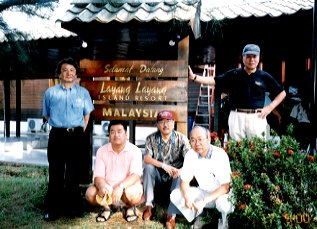
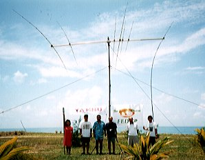
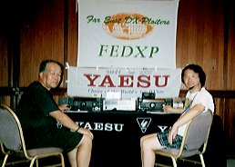
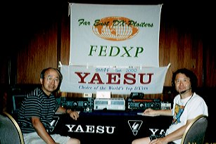
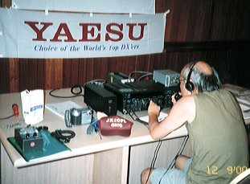
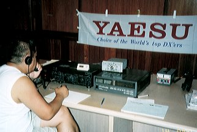
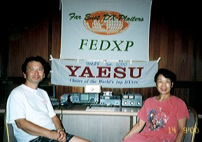
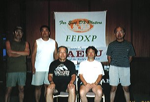
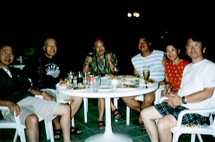

9M0F Spratly Island
FEDXP DXpedition(2000.Sep.12-17)

|
◎ 9M0F(Spratly Is) 南シナ海の南沙諸島(Spratly Is)に浮かぶ環礁の島ラヤン・ラヤン(Layang Layang)島のDXpeditionが9月12日から17日まで行われました。 このPeditionはJAのDXers Group、FEDXP(Far East DX-Ploiters=会長・JA1BRK)の40周年記念行事の一環として行われたもので、 コールサインは特別コールの"9M0F"が使用されました。 MalaysiaではPuLau Layang Layangと呼ばれているこのSpratly Isは、日本から比較的近い場所なので最近ではさほど珍しいエンティティーではないが、 運用にはこの"人工島"に常駐するマレーシア海軍の許可が必要な事もあって、外来者の運用は制限されている場所。 今回の9M0Fは"9M"の特別コールでは9M0S、9M0A、9M0Cに次ぐ4局目の運用。 運用は9月12日-17日の6日間、160m-6mのCW、SSB、RTTYで行われ、計13,915、107エンティティーとQSO。 とくに6mはコンデションに恵まれ、JAの全エリアとKH0、VR2、HL、DU、4W6、VK、BV等、8エンティティー、1,806 QSOに達した。 今回の運用者はJA1BRK、JA1RJU(9M6JU)、JA4DND、JK1OPL、JR1FBE、JF2XGF(JI1HHX)。QSLはJA1HGY宛。 |








|
今回はQSO開始直後から連日2度に渡り、強風と豪雨の"嵐"に見舞われ、ローバンドを中心としたHFのアンテナが次々に倒壊するというアクシデントが続き、
アンテナ工事に費やされる時間が多かった。幸い6mの5eleには被害は無かったものの、
"嵐"の最中は"トタン屋根"に叩きつける大粒の雨の音がヘッドホーン越しに聞こえ"受信不能"となる事も。 今回の6mでの1,806 QSOは、1998年のCDXC(英国のDXグループ)の9M0Cで400局弱だった事を考えると、 コンデションが違うとは言え"大成功"だった。
 運用を終えた最終日の夜、初めて全員揃って夕食 左からJA4DND、JA1RJU、JK1OPL、JF2XGF、JR1FBE、JA1BRK
|
9M0Fバンド別交信局数
|
 |
写真で見る9M0F |